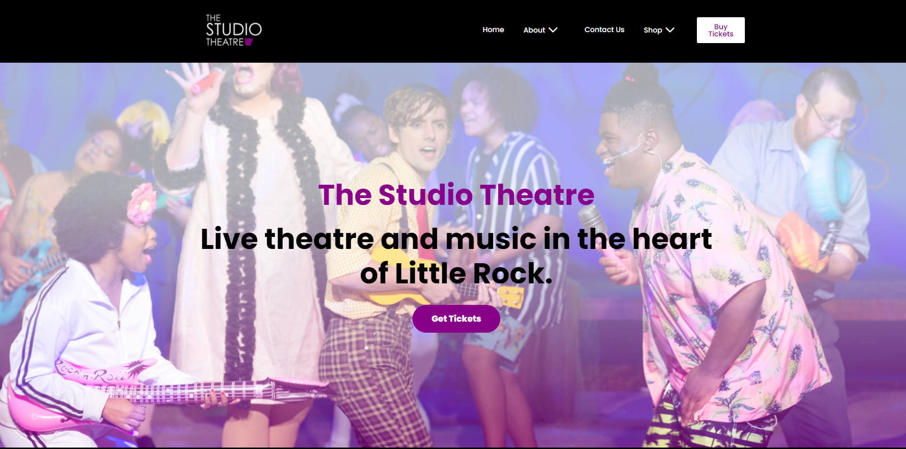

 project
The capstone project that me and my group worked on with my group was pretty fun. We got to work together as team with a real clint that needed to redone. As you can see you can click this link above, that will show you our group finish work on there website that we build on Wordpress. There was some difficult issues in the middle while processing this website. At the end we stuck through it and got the job done. I learned a lot while working with my group and I also experience a lot of things that need to be work on for the future.